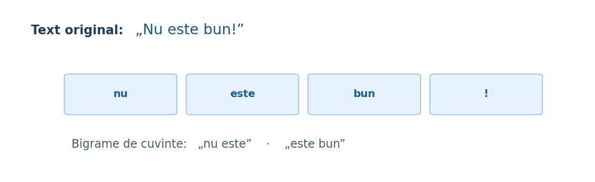

Tokeni, propoziții, expresii regulate, n-grame și particularități lingvistice. Lecția arată atât variante simple „from scratch”, cât și utilizarea practică în scikit-learn și spaCy.

split() nu este suficientsplit() separă după spații, deci "mare!" și "mare" devin tokeni diferiți, iar "s-a" rămâne un singur token. Uneori acest lucru este acceptabil pentru un baseline, dar adesea vrem să tratăm punctuația, cifrele sau abrevierile mai atent.
În română, structuri precum „s-a”, „într-un”, „București-Ilfov” sau expresiile cu ghilimele cer reguli adaptate. Un tokenizer bun nu este „cel mai complicat”, ci acela care păstrează informația relevantă pentru sarcină.
Tokenizarea pe cuvinte este intuitivă și potrivită pentru multe modele clasice. N-gramele de caractere sunt mai robuste la greșeli de tastare și variante flexionare. Subcuvintele apar frecvent în modelele neurale pentru a controla vocabularul și a trata cuvintele rare.
La mesaje scurte, date zgomotoase sau nume proprii scrise variat, n-gramele de caractere pot oferi un avantaj semnificativ.
CountVectorizer și TfidfVectorizer tokenizează automat. În setarea implicită, token_pattern selectează secvențe alfanumerice de cel puțin două caractere, ceea ce înseamnă că un token de o singură literă poate fi ignorat. Dacă alegi analyzer="char" sau "char_wb", lucrezi direct cu n-grame de caractere.
Dacă definești un tokenizer personalizat, verifică relația lui cu preprocessor, token_pattern și lowercase. Unele opțiuni sunt ignorate în anumite combinații.
Exemplele următoare merg de la tokenizare simplă la utilizare în biblioteci uzuale.
import re text = "Bună, Ana! Ai 2 mesaje noi." print("split():", text.split()) print("regex:", re.findall(r"\w+|[^\w\s]", text, flags=re.UNICODE))
tokens = ["nu", "este", "foarte", "bun"] for n in (1, 2, 3): ngrame = [" ".join(tokens[i:i+n]) for i in range(len(tokens)-n+1)] print(n, ngrame)
from sklearn.feature_extraction.text import CountVectorizer texte = ["programare", "programrae", "algoritm"] vec_cuv = CountVectorizer(analyzer="word", ngram_range=(1, 2)) X_cuv = vec_cuv.fit_transform(texte) print("Word vocab:", vec_cuv.get_feature_names_out()) vec_char = CountVectorizer(analyzer="char_wb", ngram_range=(3, 4)) X_char = vec_char.fit_transform(texte) print("Primele 12 char n-grame:", vec_char.get_feature_names_out()[:12]) print("Shape:", X_char.shape)
# necesită: pip install spacy # apoi: python -m spacy download ro_core_news_sm import spacy nlp = spacy.load("ro_core_news_sm") doc = nlp("Bună, Ana! Ai 2 mesaje noi.") print([token.text for token in doc]) print([sent.text for sent in doc.sents])
Pornim de la propoziția „Nu este foarte bun”. După lowercase, tokenizerul pe spații produce patru tokeni: nu, este, foarte, bun.
Fiecare cuvânt devine o caracteristică. Un model BoW care vede doar bun poate rata faptul că există o negație.
Construim nu este, este foarte, foarte bun. Acum modelul poate învăța tipare locale ce depind de ordinea cuvintelor.
Construim nu este foarte și este foarte bun. Dimensiunea spațiului crește, iar expresiile rare apar mai puțin.
N-gramele de caractere pot surprinde asemănarea dintre „programare” și „programrae”, însă nu rezolvă automat ambiguitățile semantice.
Concepte și API-uri: Documentația scikit-learn — Text feature extraction; scikit-learn User Guide. Pentru preprocesare lingvistică: spaCy și Stanza.